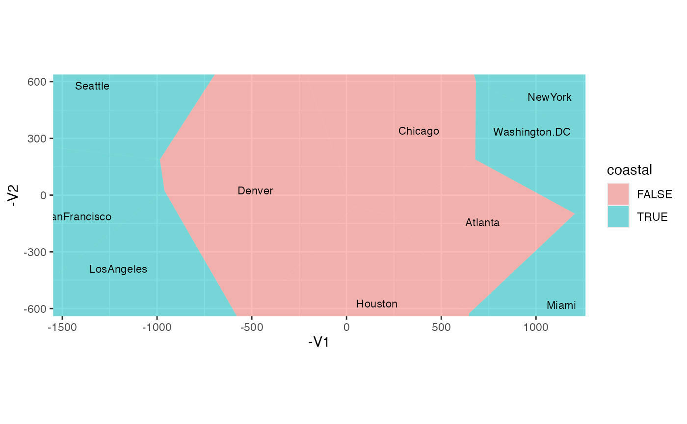
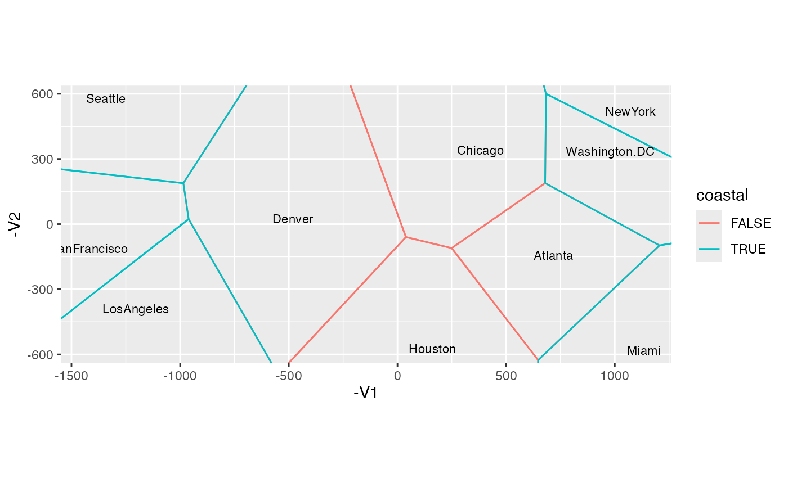

Render Voronoi cells as polygonal regions or boundary segments.
Usage
geom_voronoi(
mapping = NULL,
data = NULL,
stat = "voronoi",
position = "identity",
...,
na.rm = FALSE,
show.legend = NA,
inherit.aes = TRUE
)
geom_thiessen(
mapping = NULL,
data = NULL,
stat = "voronoi",
position = "identity",
...,
na.rm = FALSE,
show.legend = NA,
inherit.aes = TRUE
)Arguments
- mapping
Set of aesthetic mappings created by
aes(). If specified andinherit.aes = TRUE(the default), it is combined with the default mapping at the top level of the plot. You must supplymappingif there is no plot mapping.- data
The data to be displayed in this layer. There are three options:
If
NULL, the default, the data is inherited from the plot data as specified in the call toggplot().A
data.frame, or other object, will override the plot data. All objects will be fortified to produce a data frame. Seefortify()for which variables will be created.A
functionwill be called with a single argument, the plot data. The return value must be adata.frame, and will be used as the layer data. Afunctioncan be created from aformula(e.g.~ head(.x, 10)).- stat
The statistical transformation to use on the data for this layer. When using a
geom_*()function to construct a layer, thestatargument can be used to override the default coupling between geoms and stats. Thestatargument accepts the following:A
Statggproto subclass, for exampleStatCount.A string naming the stat. To give the stat as a string, strip the function name of the
stat_prefix. For example, to usestat_count(), give the stat as"count".For more information and other ways to specify the stat, see the layer stat documentation.
- position
A position adjustment to use on the data for this layer. This can be used in various ways, including to prevent overplotting and improving the display. The
positionargument accepts the following:The result of calling a position function, such as
position_jitter(). This method allows for passing extra arguments to the position.A string naming the position adjustment. To give the position as a string, strip the function name of the
position_prefix. For example, to useposition_jitter(), give the position as"jitter".For more information and other ways to specify the position, see the layer position documentation.
- ...
Additional arguments passed to
ggplot2::layer().- na.rm
Passed to
ggplot2::layer().- show.legend
logical. Should this layer be included in the legends?
NA, the default, includes if any aesthetics are mapped.FALSEnever includes, andTRUEalways includes. It can also be a named logical vector to finely select the aesthetics to display. To include legend keys for all levels, even when no data exists, useTRUE. IfNA, all levels are shown in legend, but unobserved levels are omitted.- inherit.aes
If
FALSE, overrides the default aesthetics, rather than combining with them. This is most useful for helper functions that define both data and aesthetics and shouldn't inherit behaviour from the default plot specification, e.g.annotation_borders().
Details
geom_voronoi() and geom_thiessen() are designed to pair with
stat_voronoi(), which computes the data frame-valued list-column cell
aesthetic.
GeomVoronoi un-nests cell and draws filled polygon interiors, by
default omitting perimeters. GeomThiessen un-nests cell then extracts,
uniquifies, and draws the edges shared by adjacent cells (so omits edges
along the border) as segments.
Aesthetics
geom_voronoi() and geom_thiessen() understand the
following aesthetics (required aesthetics are in bold):
cell(computed)alphacolourfilllinetypelinewidth
See also
Other geom layers:
geom_axis(),
geom_bagplot(),
geom_isoline(),
geom_lineranges(),
geom_rule(),
geom_text_radiate(),
geom_vector()
Examples
UScitiesD %>%
cmdscale(k = 3) %>%
as.data.frame() %>%
tibble::rownames_to_column(var = "city") ->
usa_mds
usa_mds$coastal <- c(rep(FALSE, 4L), rep(TRUE, 6L))
# polygon-based rendering (cell interiors and perimeter paths)
usa_mds %>%
ggplot(aes(-V1, -V2, label = city)) +
coord_equal() +
geom_voronoi(aes(fill = coastal), colour = NA) +
geom_text(size = 3)

# segment-based rendering (de-duplicated cell boundaries)
usa_mds %>%
ggplot(aes(-V1, -V2, label = city)) +
coord_equal() +
geom_thiessen(aes(colour = coastal)) +
geom_text(size = 3)
